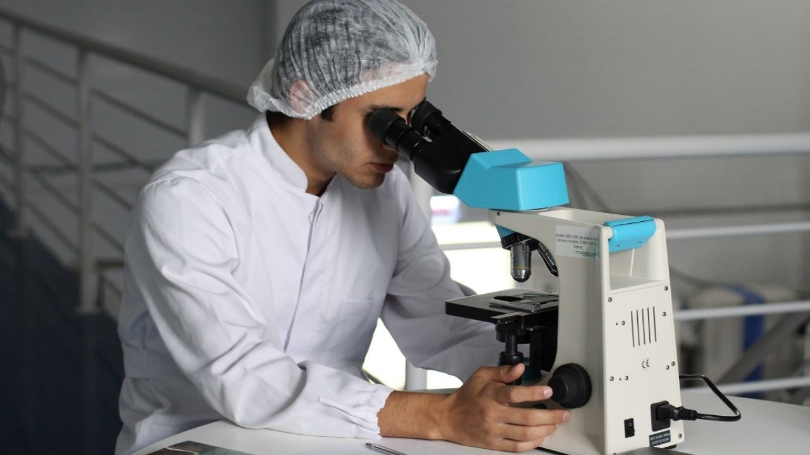

¡NO FUERON LOS CHINOS!Estudio revela que el origen del coronavirus pudo darse en Brasil

A un año del inicio de la pandemia, se está analizando la posibilidad de que el origen del coronavirus haya sido en Brasil y no en China, de acuerdo con investigaciones basadas en las aguas residuales de la ciudad turística de Florianópolis, en Brasil.
Al analizar estas muestras, se confirmó que hay pruebas de que el virus ya circulaba desde al menos un mes antes de que se dieran a conocer los primeros casos de Wuhan, en China.
La investigación fue publicada en la revista Science of the Total Environment, donde afirman que se encontró la presencia del coronavirus desde finales de noviembre de 2019.
Noticias Relacionadas
El hallazgo se suma a otros casos en París, Milán y Barcelona donde demuestran que el virus ya circulaba desde antes sin que nadie se hubiera dado cuenta.
Las aguas residuales se han convertido en un elemento fundamental para el estudio de dónde y cómo se originó el coronavirus que ha causado una pandemia.
'Nuestro estudio se hizo en aguas residuales y encontró que había gran cantidad de gente que estaba excretando el virus en Florianópolis, mucho antes de que se reportaran los primeros casos de contagio en Brasil', explicó el coordinador de la investigación, Alfonso David Rodríguez, durante una entrevista para Radio Francia Internacional, la cual retomó
El Clarín .
La importancia de estudio de las aguas residuales radica en que hay una gran cantidad de personas que presentan diarrea como uno de los síntomas de la enfermedad y, por lo tanto, excretan el virus.
De acuerdo con las declaraciones de los expertos, 'un enfermo puede eliminar hasta mil millones de partículas por mil litros de diarrea'.
Hasta ahora, Brasil es el país con la cifra más elevada en mortalidad ante el coronavirus.Diariamente mueren en promedio 2 mil 300 personas durante la peor fase de la pandemia.
Independientemente del origen del coronavirus, Brasil ya superó los 300 mil fallecidos y es el lugar del mundo donde más se mueren las personas a causa de la COVID-19, según ha indicado la Organización Mundial de la Salud (OMS).
chp
Posted On: 2021-03-26T00:00:00
Posted By: Heraldo de México
Content Date: 2021-03-26
Download Date: 2021-04-21
Document ID: L0C04AT2S